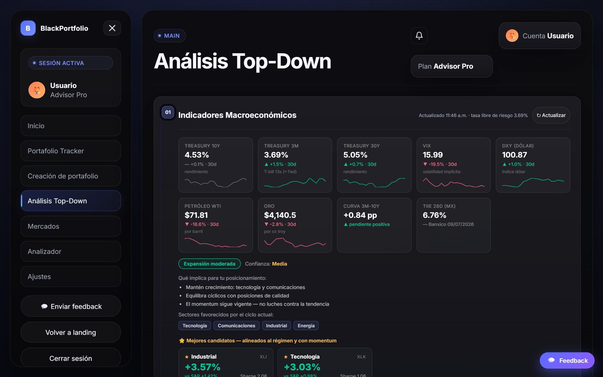
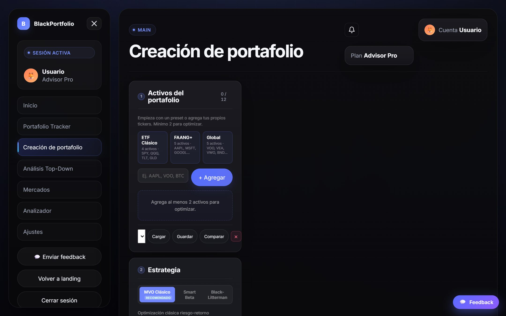

Explorer
Para poner en orden una cartera personal.
$0USD/mes
Sin tarjeta
- 1 portafolio
- Hasta 10 posiciones
- Mercado diferido 15 min
- Rendimiento XIRR
- Análisis de riesgo
- Backtesting
BlackPortfolio·Ciudad de México·Beta abierta
Construye portafolios multi-activo, mide el riesgo que de verdad importa —caída máxima, volatilidad, Sharpe, concentración— y entrega un reporte que aguanta una junta.
BlackPortfolio organiza, mide y presenta información de inversión. No es una casa de bolsa, no ejecuta operaciones y no emite recomendaciones personalizadas de compra o venta.
No son indicadores decorativos: son las cifras que el motor de análisis calcula sobre tus posiciones reales, con el nombre que usan quienes las usan.
¿Cuánto puedo perder en el peor tramo?
Caída máxima desde el pico anterior, con la fecha en que ocurrió y cuánto tardó en recuperarse.
Caída máxima · VaR
¿Estoy cobrando por el riesgo que cargo?
Volatilidad anualizada contra retorno, y el Sharpe que resulta de dividir uno por el otro.
Volatilidad · Sharpe
¿Está mi dinero donde creo que está?
Concentración por posición, sector y clase de activo, medida con el índice HHI en lugar de a ojo.
HHI · Correlación
¿Cuánto he ganado, de verdad?
Rendimiento ponderado por dinero y por tiempo, con las aportaciones y retiros contados donde ocurrieron.
XIRR · TWR
Capturas del producto en uso. Sin maquetas, sin pantallas inventadas.



El reporte es la pieza que le mandas a alguien más: composición, atribución de rendimiento, riesgo y una narrativa escrita sobre las noticias de cada posición —no sobre generalidades del mercado—. Sale en español, inglés o francés, en PDF o como presentación interactiva.
Reporte de portafolio
Enero – Junio 2026
| Rendimiento | +12.4% |
|---|---|
| Caída máxima | −8.1% |
| Volatilidad | 11.8% |
| Sharpe | 1.42 |
Correo o Google, y 2FA si quieres cerrarla bien desde el primer día. El plan Explorer no pide tarjeta.
A mano o importadas. Acciones, ETFs, cripto y renta fija, con su precio y su fecha. Sin credenciales de tu broker.
Riesgo, concentración y señales de rebalanceo en el tablero. Cuando lo necesites, el reporte sale de ahí.
Es la línea que no cruzamos, y conviene que la sepas antes de abrir la cuenta: BlackPortfolio ordena tu información, la mide y la presenta. No ejecuta operaciones, no toca tu dinero y no te dice qué comprar.
2FA con app autenticadora, sesiones revocables y dispositivo de confianza. La clave del segundo factor nunca llega al navegador.
Las posiciones se capturan o se importan. No pedimos las llaves de tu cuenta de inversión para funcionar.
Cuando un precio viene diferido o una fuente falla, la pantalla lo dice. Un número sin contexto es peor que ningún número.
Para poner en orden una cartera personal.
$0USD/mes
Sin tarjeta
Para medir riesgo sin depender de nadie.
$19USD/mes
≈ $349 MXN
Para quien le explica la cartera a alguien más.
$59USD/mes
≈ $1,090 MXN
Para una mesa con varios analistas.
$129USD/mes
≈ $2,390 MXN
Precios en USD; la referencia en MXN se cobra al tipo de cambio del día. Tarjeta vía Stripe o transferencia SPEI, con factura CFDI. Sin permanencia, 14 días de garantía.
| Concepto | Explorer | Investor | Advisor Pro | Wealth Desk |
|---|---|---|---|---|
| Portafolios y datos | ||||
| Portafolios activos | 1 | 3 | Ilimitados | Ilimitados |
| Posiciones por portafolio | 10 | 50 | Ilimitadas | Ilimitadas |
| Datos de mercado | Diferidos 15 min | Tiempo real | Tiempo real | Tiempo real |
| Análisis | ||||
| Rendimiento XIRR / TWR | Básico | |||
| Riesgo: volatilidad, caída máxima, Sharpe | Esencial | Avanzado con VaR | Avanzado con VaR | |
| Backtesting y escenarios | ||||
| Rebalanceo asistido | ||||
| Optimización MVO / Smart Beta / Black-Litterman | Esencial | |||
| Reporte y equipo | ||||
| Reporte para cliente | Mensual | Ilimitado, con tu marca | Marca blanca | |
| Narrativa de IA anclada a noticias | ||||
| Usuarios y roles | 1 | 1 | 3 usuarios | Ilimitados con permisos |
| Alertas de precio | Limitadas | Básicas | Avanzadas | Avanzadas y webhooks |
| Integración y soporte | ||||
| API y webhooks | ||||
| 2FA con app autenticadora | ||||
| Soporte | Comunidad | Correo | Prioritario | Dedicado con onboarding |
Explorer es gratis y no pide tarjeta. Si la cartera crece, el resto de los planes están ahí; si no crece, te quedas donde estás.
Acceso por invitación durante la beta. Si no tienes código, la lista de espera queda registrada al crear la cuenta.